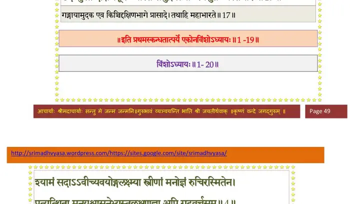

स्कन्ध 1 · अध्याय 19
श्लोक १
सूत उवाच–
महीपतिस्त्वथ तत्कर्म गर्ह्यं विचिन्तयन्नात्मकृतं सुदुर्मनाः ।
अहो मया नीचमनार्यवत्कृतं निरागसि ब्रह्मणि गूढतेजसि।। १ ।।
महीपतिस्त्वथ तत्कर्म गर्ह्यं विचिन्तयन्नात्मकृतं सुदुर्मनाः ।
अहो मया नीचमनार्यवत्कृतं निरागसि ब्रह्मणि गूढतेजसि।। १ ।।
श्लोक २
ध्रुवं ततो मे कृतदेवहेलनाद् दुरत्ययं व्यसनं नातिदीर्घात् ।
तदस्तु काममघनिष्कृताय मे यथा न कुर्यां पुनरेवमद्धा।। २ ।।
तदस्तु काममघनिष्कृताय मे यथा न कुर्यां पुनरेवमद्धा।। २ ।।
श्लोक ३
औव राज्यं बलमृद्धकोशं प्रकोपितब्रह्मकुलानलो मे ।
दहत्वभद्रस्य पुनर्न मेऽभूत्पापीयसी धीर्द्विजदेवतासु।। ३ ।।
दहत्वभद्रस्य पुनर्न मेऽभूत्पापीयसी धीर्द्विजदेवतासु।। ३ ।।
श्लोक ४
स चिन्तयन्नित्थमथाशृणोद्यथा मुनेः सुतोक्तान्निकृतिं तक्षकाख्यात् ।
स साधु मेने न चिरेण तक्षकादलं प्रसक्तस्य विरक्तिकारणम्।।४।।
स साधु मेने न चिरेण तक्षकादलं प्रसक्तस्य विरक्तिकारणम्।।४।।
श्लोक ५
अथो विहायेमममुञ्च लोकं विमृश्य तौ हेयतया पुरस्तात् ।
कृष्णाङ्घ्रिसेवामभिमन्यमान उपाविशत्प्रायममर्त्यनद्याम्।। ५ ।।
कृष्णाङ्घ्रिसेवामभिमन्यमान उपाविशत्प्रायममर्त्यनद्याम्।। ५ ।।
श्लोक ६
या वै लसच्छ्रीतुलसीविमिश्रकृष्णाङ्घ्रिरेण्वभ्यधिकाम्बुनेत्री ।
पुनात्यशेषानुभयत्र लोकान् कस्तां न सेवेत मरिष्यमाणः।। ६ ।।
पुनात्यशेषानुभयत्र लोकान् कस्तां न सेवेत मरिष्यमाणः।। ६ ।।
श्लोक ७
इति व्यवस्थाय च पाण्डवेयः प्रायोपवेशं प्रति विष्णुपद्याम् ।
दध्यौ मुकुन्दाङ्घ्रिमनन्यभावो मुनिव्रतो मुक्तसमस्तसङ्गः।। ७ ।।
दध्यौ मुकुन्दाङ्घ्रिमनन्यभावो मुनिव्रतो मुक्तसमस्तसङ्गः।। ७ ।।
श्लोक ८
तत्रोपजग्मुर्भुवनं पुनाना महानुभावा मुनयः सशिष्याः ।
प्रायेण तीर्थाधिगमापदेशैः स्वयं हि तीर्थानि पुनन्ति सन्तः।। ८ ।।
प्रायेण तीर्थाधिगमापदेशैः स्वयं हि तीर्थानि पुनन्ति सन्तः।। ८ ।।
श्लोक ९
अत्रिर्वसिष्ठश्च्यवनः शरद्वानरिष्टनेमिर्भृगुरङ्गिराश्च ।
पराशरो गाधिसुतोऽथ राम उचथ्य इन्द्रप्रमतीध्मवाहौ।। ९ ।।
पराशरो गाधिसुतोऽथ राम उचथ्य इन्द्रप्रमतीध्मवाहौ।। ९ ।।
श्लोक १०
मेधातिथिर्देवल आर्ष्टिषेणो भरद्वाजो गौतमः पिप्पलादः ।
मैत्रेय और्वः कवषः कुम्भयोनिर्द्वैपायनो भगवान्नारदश्च।। १० ।।
मैत्रेय और्वः कवषः कुम्भयोनिर्द्वैपायनो भगवान्नारदश्च।। १० ।।
श्लोक ११
अन्ये च देवर्षिब्रह्मर्षिवर्याः राजर्षिवर्या अरुणादयश्च ।
नानार्षेयप्रवरान् समेतानभ्यर्च्य राजा शिरसा ववन्दे।। ११ ।।
नानार्षेयप्रवरान् समेतानभ्यर्च्य राजा शिरसा ववन्दे।। ११ ।।
श्लोक १२
सुखोपविष्टेष्वथ तेषु भूयः कृतप्रणामः स्वचिकीर्षितं यत् ।
विज्ञापयामास विविक्तचेता उपस्थितोऽग्रेऽर्घ्यगृहीतपाणिः।। १२ ।।
विज्ञापयामास विविक्तचेता उपस्थितोऽग्रेऽर्घ्यगृहीतपाणिः।। १२ ।।
श्लोक १३
राजोवाच–
अहो वयं धन्यतमा नृपाणां महत्तमानुग्रहणीयशीलाः ।
राज्ञां कुलं ब्राह्मणपादशौचमाराद्विसृष्टं बत गर्ह्यकर्म।। १३ ।।
अहो वयं धन्यतमा नृपाणां महत्तमानुग्रहणीयशीलाः ।
राज्ञां कुलं ब्राह्मणपादशौचमाराद्विसृष्टं बत गर्ह्यकर्म।। १३ ।।
श्लोक १४
तस्यैव मेऽस्त्वद्य परावरेशे व्यासक्तचित्तस्य गृहेष्वभीक्ष्णम् ।
निर्वेदमूलो द्विजशापरूपो यत्र प्रसक्तो(ऽ)भयमेव धत्ते।। १४ ।।
निर्वेदमूलो द्विजशापरूपो यत्र प्रसक्तो(ऽ)भयमेव धत्ते।। १४ ।।
श्लोक १५
तं मोपविष्टं प्रतियान्तु विप्रा गङ्गा च देवी धृतचित्तमीशे ।
द्विजोपसृष्टः कुहकस्तक्षको वा दशत्वलं गायत विष्णुगाथाः।। १५ ।।
द्विजोपसृष्टः कुहकस्तक्षको वा दशत्वलं गायत विष्णुगाथाः।। १५ ।।
श्लोक १६
पुनश्च भूयाद्भगवत्यनन्ते रतिः प्रसङ्गश्च तदाश्रयेषु ।
महत्सु यां यां उपयामि सृष्टिं मैत्र्यस्तु सर्वत्र नमो द्विजेभ्यः।।१६।।
महत्सु यां यां उपयामि सृष्टिं मैत्र्यस्तु सर्वत्र नमो द्विजेभ्यः।।१६।।
श्लोक १७
इति स्म राजा व्यवसाययुक्तः प्राचीनकाग्रेषु कुशेषु धीरः ।
उदङ्मुखो दक्षिणकूल आस्ते समुद्रपत्न्यास्स्वसुतन्यस्तभारः।। १७ ।।
उदङ्मुखो दक्षिणकूल आस्ते समुद्रपत्न्यास्स्वसुतन्यस्तभारः।। १७ ।।
भागवततात्पर्यनिर्णय

श्लोक १८
विहाय सर्वं नरदेवचिह्नं केयूरहाराङ्गदमौलिरत्नान् ।
रत्नांगुलीयान् विमलान्निरस्य पवित्रपाणिर्मुनिवेष आस्ते।। १८ ।।
रत्नांगुलीयान् विमलान्निरस्य पवित्रपाणिर्मुनिवेष आस्ते।। १८ ।।
श्लोक १९
एवं च तस्मिन्नरदेवदेवे प्रायोपविष्टे दिवि देवसङ्घाः ।
प्रशस्य भूमौ व्यकिरन् प्रसूनैर्मुदा मुहुर्दुन्दुभयश्च नेदुः।। १९ ।।
प्रशस्य भूमौ व्यकिरन् प्रसूनैर्मुदा मुहुर्दुन्दुभयश्च नेदुः।। १९ ।।
श्लोक २०
महर्षयो वै समुपागता ये प्रशस्य साध्वित्यनुमोदमानाः ।
ऊचुः प्रजानुग्रहशीलसारा यदुत्तमश्लोकगुणानुरूपम्।। २० ।।
ऊचुः प्रजानुग्रहशीलसारा यदुत्तमश्लोकगुणानुरूपम्।। २० ।।
श्लोक २१
न वा इदं राजर्षिवर्य चित्रं भवत्सु कृष्णं समनुव्रतेषु ।
येऽध्यासनं राजकिरीटजुष्टं सद्यो जहुर्भगवत्पार्श्वकामाः।। २१ ।।
येऽध्यासनं राजकिरीटजुष्टं सद्यो जहुर्भगवत्पार्श्वकामाः।। २१ ।।
श्लोक २२
सर्वे वयं तावदिहास्महेऽथ कलेवरं यावदसौ विहाय ।
अजं परं विरजस्कं विशोकं यास्यत्ययं भागवतप्रधानः।। २२ ।।
अजं परं विरजस्कं विशोकं यास्यत्ययं भागवतप्रधानः।। २२ ।।
श्लोक २३
आश्रुत्य तदृषिगणवचः परीक्षित् समं मधुश्चुत् गुरुशापव्यलीकम् ।
आभाषतैनानभिवन्द्य युक्तः शुश्रूषमाणश्चरितानि विष्णोः।। २३ ।।
आभाषतैनानभिवन्द्य युक्तः शुश्रूषमाणश्चरितानि विष्णोः।। २३ ।।
श्लोक २४
राजोवाच–
समागताः सर्वत एव सर्वे वेदा यथा मूर्तिधरास्त्रिपृष्ठे ।
नेहाथवाऽमुत्र च कश्चनार्थ ऋते परानुग्रहमात्मशीलाः।। २४ ।।
समागताः सर्वत एव सर्वे वेदा यथा मूर्तिधरास्त्रिपृष्ठे ।
नेहाथवाऽमुत्र च कश्चनार्थ ऋते परानुग्रहमात्मशीलाः।। २४ ।।
श्लोक २५
ततश्च वः प्रश्नमिमं विपृच्छे विश्रभ्य विप्रा इतिकृत्यतायाम् ।
सर्वात्मना म्रियमाणैस्तु कृत्यं शुद्धञ्च तत्रामृशताभियुक्ताः।। २५ ।।
सर्वात्मना म्रियमाणैस्तु कृत्यं शुद्धञ्च तत्रामृशताभियुक्ताः।। २५ ।।
।। इति श्रीमद्भागवते प्रथमस्कन्धे एकोनविंशोऽध्यायः ।।